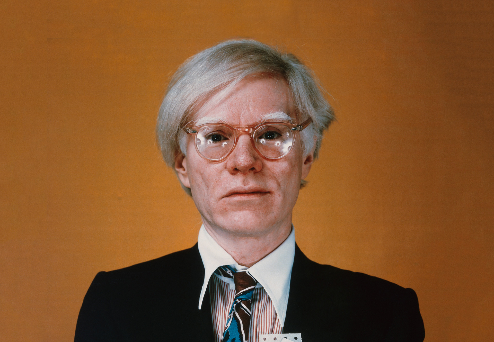

Andy Warhol
Orígenes y formación
Andy Warhol nació en Pittsburgh, Estados Unidos, en 1928, en una familia de origen eslovaco. Estudió diseño pictórico en el Carnegie Institute of Technology y, después de graduarse, se trasladó a Nueva York. Antes de ser reconocido como artista, trabajó como ilustrador comercial para revistas, anuncios y marcas. Esta experiencia fue fundamental: conocía desde adentro el modo en que una imagen atractiva puede circular, repetirse y vender un producto. Su transición hacia las artes visuales no significó abandonar la publicidad, sino convertir sus procedimientos en una parte esencial de su obra.
De los anuncios al museo
A comienzos de los años sesenta, Warhol empezó a representar productos conocidos, entre ellos las latas de sopa Campbell y las botellas de Coca-Cola. Su elección resultaba provocadora porque sustituía los temas considerados nobles por objetos que podían encontrarse en cualquier supermercado. En Campbell’s Soup Cans (1962) presentó treinta y dos pinturas de variedades de sopa, insistiendo en la repetición y en la apariencia casi idéntica de cada envase. Al llevar esa serie a una galería, convirtió un producto industrial en un problema artístico: ¿qué diferencia una imagen comercial de una obra de arte?
Serigrafía, repetición y celebridad
Warhol adoptó la serigrafía para transferir imágenes fotográficas a sus lienzos. La técnica le permitía producir variantes de una misma imagen con diferentes colores, registros e imperfecciones. En sus retratos de Marilyn Monroe, Elizabeth Taylor y Elvis Presley, el rostro de la celebridad se transforma en una superficie reproducible. La fama aparece como algo construido por la circulación de imágenes. La repetición puede resultar alegre y decorativa, pero también sugerir desgaste, pérdida de individualidad o distancia emocional.
The Factory y la cultura contemporánea
Su estudio neoyorquino, conocido como The Factory, reunió artistas, músicos, actores y figuras de la contracultura. Allí se produjeron pinturas, películas y experiencias colectivas que desdibujaban la separación entre arte, espectáculo y vida social. Warhol también realizó obras relacionadas con accidentes, violencia y noticias de prensa, mostrando que los medios convierten tanto el consumo como la tragedia en imágenes de circulación masiva. Murió en 1987. Su influencia persiste en las discusiones sobre celebridad, autoría, reproducción y construcción de identidad en los medios digitales.
VER OBRA CLAVE: Campbell’s Soup Cans ↗